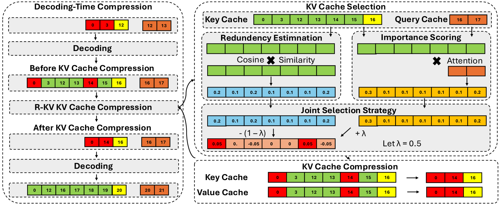

Why it matters왜 중요한가
For reasoning models the KV-cache bottleneck has moved from the prompt to the output — and the output is full of redundancy that attention can't see past.
추론 모델에서 KV 캐시 병목은 프롬프트가 아니라 출력으로 옮겨갔다 — 그리고 그 출력은 어텐션이 꿰뚫어 보지 못하는 중복으로 가득하다.
Almost all KV-cache compression was designed for the prefill stage: a long input prompt, compressed once. Reasoning models flip the problem — a short prompt produces a 32K-token chain-of-thought, and the cache grows token-by-token during decoding (a single R1-Distill-Llama-8B trace can eat 4.1 GB of KV alone). The natural fix — evict low-attention tokens (SnapKV, PyramidKV) — backfires here: repeated self-reflections attend strongly to their own earlier copies, so attention rewards redundancy and the method keeps the duplicates while pruning scattered-but-essential reasoning steps. R-KV's contribution is to make eviction redundancy-aware: a second signal, semantic similarity between key vectors, explicitly penalises tokens that merely echo what's already cached. It's training-free, drop-in, and turns a setting where prior compression collapses to ~60% of full accuracy into one that stays effectively lossless.
거의 모든 KV 캐시 압축은 prefill 단계용으로 설계됐다 — 긴 입력 프롬프트를 한 번 압축. 추론 모델은 문제를 뒤집는다. 짧은 프롬프트가 32K 토큰짜리 사고 사슬을 만들고, 캐시는 디코딩 중 토큰마다 자라난다(R1-Distill-Llama-8B 한 번의 추론이 KV만 4.1GB를 먹는다). 자연스러운 해법인 저(低)어텐션 토큰 축출(SnapKV, PyramidKV)은 여기서 역효과를 낸다 — 반복되는 자기성찰 문장은 앞서 나온 자기 복사본에 강하게 어텐션하므로, 어텐션이 중복을 보상하고 기법은 중복을 남긴 채 흩어져 있지만 필수적인 추론 단계를 잘라낸다. R-KV의 기여는 축출을 중복 인식형으로 만든 것이다 — 두 번째 신호인 key 벡터 간 의미 유사도가, 이미 캐시된 내용을 그저 되풀이하는 토큰에 명시적 페널티를 준다. 학습이 필요 없는 drop-in이며, 기존 압축이 full 정확도의 ~60%로 무너지던 상황을 사실상 무손실로 바꾼다.

By the numbers핵심 숫자
On the hardest benchmark, R-KV matches the full cache while the attention-only baseline collapses가장 어려운 벤치마크에서 R-KV는 full 캐시를 따라잡고, 어텐션-only 베이스라인은 무너진다
| KV budget (tokens)KV 예산(토큰) | FullKV | SnapKV | R-KV |
|---|---|---|---|
| 512 | 49.79 | 4.53 | 29.48 |
| 1024 | 49.79 | 15.73 | 45.26 |
| 1536 | 49.79 | 26.04 | 51.56 |
| 2048 | 49.79 | 32.76 | 52.29 |
The core ideas핵심 아이디어
Attention — but stabilised어텐션 — 단, 안정화
The last α "observation" tokens (e.g. 8) act as queries against every cached key to score importance. For GQA, head-group attention is aggregated by max-pooling (preserves critical tokens better than mean), and a sliding-window max-pool over recent positions damps outlier spikes. This is the familiar SnapKV-style signal — necessary, but on its own it rewards repetition.
마지막 α개(예: 8) "관측" 토큰이 모든 캐시 key에 대한 쿼리가 되어 중요도를 매긴다. GQA에서는 헤드 그룹 어텐션을 max-pooling으로 집계하고(평균보다 핵심 토큰을 더 잘 보존), 최근 위치에 슬라이딩 윈도 max-pool을 적용해 이상치 스파이크를 누른다. 익숙한 SnapKV식 신호로 필수적이지만, 단독으로는 반복을 보상한다.
Cosine similarity between keyskey 간 코사인 유사도
L2-normalise key vectors and build a token×token cosine-similarity matrix (diagonal zeroed). A token whose key looks like many others is redundant; its averaged similarity, softmax-normalised, becomes a per-token redundancy score. A guard zeroes similarity to a token's β most-recent neighbours so freshly generated context isn't wrongly flagged as duplicate.
key 벡터를 L2 정규화해 토큰×토큰 코사인 유사도 행렬을 만든다(대각선은 0). 자신의 key가 많은 다른 토큰과 닮은 토큰은 중복이다 — 평균 유사도를 softmax로 정규화해 토큰별 중복 점수로 삼는다. 보호 장치로 토큰의 최근 β개 이웃과의 유사도를 0으로 만들어, 갓 생성된 문맥이 중복으로 오인되지 않게 한다.
Keep the useful AND novel유용하면서 새로운 것을 남김
Each token's score is Z = λ·Importance − (1−λ)·Redundancy (best at λ=0.1), averaged across heads. The top B−α tokens plus the α recent observation tokens fill a fixed budget. Compression fires after every 128-token segment during decoding, so the cache size never grows with the reasoning length.
각 토큰 점수는 Z = λ·중요도 − (1−λ)·중복도(λ=0.1이 최적)이며 헤드 평균을 낸다. 상위 B−α개 토큰과 최근 관측 토큰 α개가 고정 예산을 채운다. 디코딩 중 128 토큰 구간마다 압축이 실행되어 캐시 크기가 추론 길이에 따라 늘지 않는다.
How it works어떻게 작동하나
- Decode a segment한 구간 디코딩 — generate a fixed buffer (e.g. 128 tokens) on top of the current fixed-size cache; always pin the last α tokens as observation queries. — 현재 고정 크기 캐시 위에 고정 버퍼(예: 128 토큰)를 생성하고, 마지막 α 토큰은 관측 쿼리로 항상 고정한다.
- Score importance중요도 채점 — attention from the α observation tokens to all candidates, max-pooled across GQA groups and over a recent window for stability. — α 관측 토큰에서 모든 후보로의 어텐션을 GQA 그룹·최근 윈도에 걸쳐 max-pool해 안정화한다.
- Score redundancy중복도 채점 — cosine similarity between normalised keys; high average similarity → high redundancy, with recent neighbours exempted. — 정규화된 key 간 코사인 유사도로, 평균 유사도가 높으면 중복도 ↑(최근 이웃은 면제).
- Joint select결합 선택 — rank by Z = λ·importance − (1−λ)·redundancy, keep the top B−α plus the α observation tokens, evict the rest. — Z = λ·중요도 − (1−λ)·중복도로 정렬해 상위 B−α개와 관측 토큰 α개를 남기고 나머지는 축출한다.
- Repeat to the end끝까지 반복 — the cache stays at the fixed budget for the whole generation, freeing memory for far larger batches (the real throughput win). — 캐시는 생성 내내 고정 예산을 유지해 훨씬 큰 배치를 위한 메모리를 확보한다(실제 처리량 이득의 원천).
What to take away그래서, 가져갈 것
Attention ≠ importance for reasoning traces. Repetition makes redundant tokens look important; adding a cheap redundancy signal (key cosine similarity) is what unlocks near-lossless compression where attention-only methods plateau at ~60%.
추론 과정에서 어텐션은 중요도가 아니다. 반복이 중복 토큰을 중요해 보이게 만든다 — 값싼 중복 신호(key 코사인 유사도)를 더한 것이, 어텐션-only가 ~60%에서 정체하던 지점에서 무손실에 가까운 압축을 연다.
The bottleneck for reasoning models is decode-time, not prefill. R-KV holds the cache at a fixed budget regardless of how long the model rambles, so memory is decoupled from chain-of-thought length.
추론 모델의 병목은 prefill이 아니라 디코딩 시점이다. R-KV는 모델이 얼마나 길게 늘어놓든 캐시를 고정 예산으로 유지해, 메모리를 사고 사슬 길이와 분리한다.
Throughput comes from batch size, not per-request speed. At batch 1 R-KV is barely faster; the 6.6–9.2× gains come from fitting 9–13× more sequences in the same memory — useful for RL rollouts and serving, less so for single-stream latency.
처리량은 요청당 속도가 아니라 배치 크기에서 온다. 배치 1에선 거의 빠르지 않다 — 6.6–9.2× 이득은 같은 메모리에 9–13× 더 많은 시퀀스를 담는 데서 나온다. RL 롤아웃·서빙엔 유용, 단일 스트림 지연엔 덜하다.